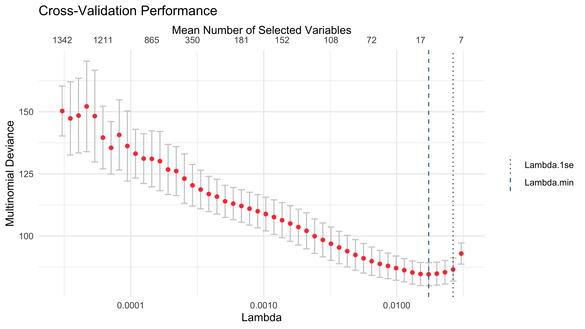

# Load preprocessed datasetbladder_comp_adj <-readRDS(here("paper", "data", "bladder_comp_adj.rds"))# Create a stratified 50/50 splitset.seed(123)split <-initial_split(bladder_comp_adj, prop =0.5, strata = event)# Create training and testing data framestrain <-training(split)test <-testing(split)# Verify the proportionstable(train$event) /nrow(train)
#>
#> 0 1 2
#> 0.7466667 0.0800000 0.1733333
table(test$event) /nrow(test)
#>
#> 0 1 2
#> 0.76158940 0.05298013 0.18543046
1 cbSCRIP
# cbSCRIP cross validation## Check if file has been run before. file_save <-here("paper", "results",glue("cv_multinom_enet.rds"))if (!file.exists(file_save)) {set.seed(123)# Run CV tictoc::tic() cv_multinom_enet <-cv_cbSCRIP(Surv(time, event) ~ .,cbind(train[,-(2:7), , drop =FALSE], train[,2:7, , drop =FALSE]),n_unpenalized =7,lr_adj =50,maxit =200,fit_fun = cbSCRIP::MNlogisticSAGA_Native) tictoc::toc()write_rds(cv_multinom_enet,here("paper","results",glue("cv_multinom_enet.rds")))}cv_multinom_enet <-readRDS(file_save)# CV plotplot(cv_multinom_enet)

# Model resultscv_multinom_enet
#> --- Cross-Validated Case-Base Competing Risks Model ---
#>
#> Call:
#> cv_cbSCRIP(formula = Surv(time, event) ~ ., data = cbind(train[,
#> -(2:7), , drop = FALSE], train[, 2:7, , drop = FALSE]), n_unpenalized = 7,
#> lr_adj = 50, maxit = 200, fit_fun = cbSCRIP::MNlogisticSAGA_Native)
#>
#> Performed 5-fold cross-validation over 50 lambda values.
#>
#> Optimal Lambda Values:
#> Lambda with minimum deviance (lambda.min): 0.0174
#> Largest lambda within 1 SE of min (lambda.1se): 0.0265
#>
#> The final model (fit.min) was fit using lambda.min and has 17 non-zero coefficients.